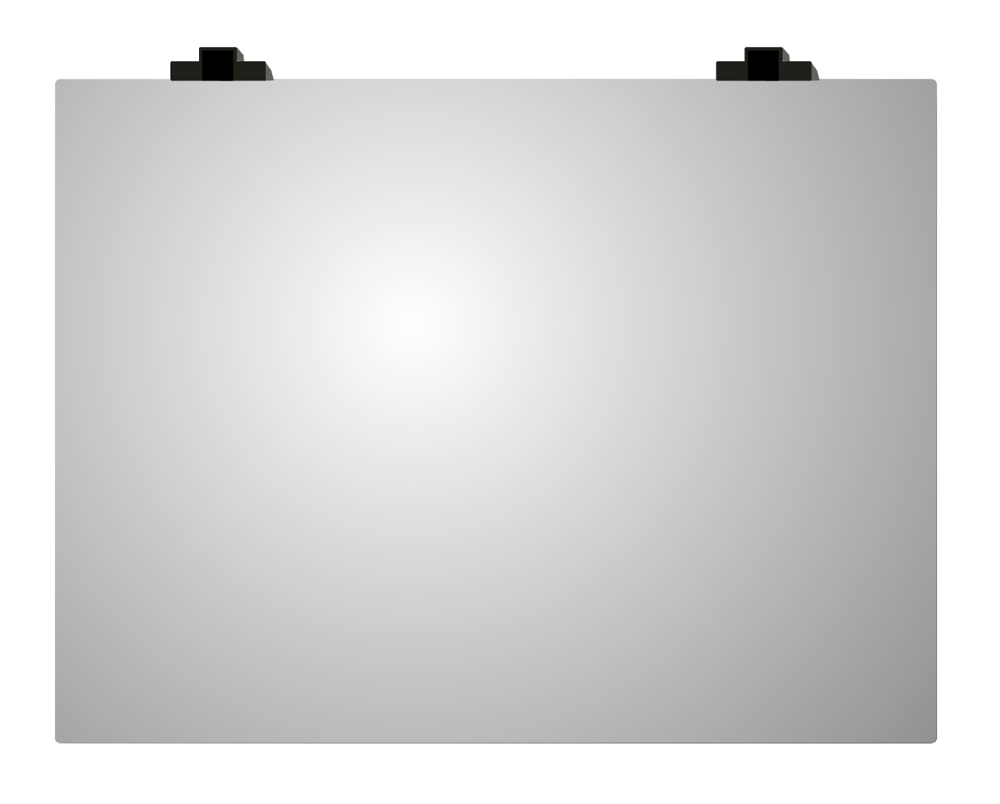

Associate Support Representative, Braze
- Prioritize, troubleshoot and plan responses for complex customer issues on the Braze platform.
- Help customers quickly overcome technical issues.
- Contribute regularly to the Braze knowledge base.
My name is Jordan DeLaforgue (that's pronounced Dell-uh-forg), and I'm a web developer. Since 2016 I've spent most every day experimenting with HTML, CSS, JavaScript, Python and Java, and I use them to design and develop websites.
I was born and raised on Chicago's north side and graduated from Lane Tech in 2009 ("OH-NINE!" if you know, you know), where I met my wife Paloma. Today we're raising our son Ezekiel, born in 2019, here in the city.
I started by2891 LLC shortly after he was born, to put my skills toward a better community around my family. Public servants, teachers, community leaders and local independent artists are the clients I'm most proud to work with, and I'm open to projects aligned with those interests.
Sites I've designed and built, mostly for teachers, community leaders and independent artists.

A site for Mrs. Porte, a 4th grade teacher at Lloyd Elementary in Chicago, built as a bridge between students' homes and the classroom. Designed for speed, simplicity and accessibility, with built-in translation and full ADA compliance.
HTML5, CSS, JavaScript, jQuery, Bootstrap 4
Visit site
Designed and built from scratch for the rapper Roc Marciano. Mostly vanilla JavaScript for a smooth, minimal experience, with clear headers and a simple palette that reflects his music. Music, shop and social links are front and center, and a discography grid links out to stream or buy each release.
HTML5, CSS, JavaScript, jQuery, Bootstrap 4. Shop is demo only.
Visit siteMixes and edits I make in my spare time. Hit play and keep browsing; the music follows you around the site.
Explicit content: lots of bad words in some of these songs.

Notes on building for the web, making music, and Chicago.

Web developer in Chicago. JDeLaforgue@gmail.com, GitHub
A highly adaptable and creative professional. An excellent communicator with a solid foundation in web design, database development and programming.
Skills: HTML and CSS, JavaScript, Ruby on Rails, Java, MySQL
Vanilla HTML, CSS and JavaScript site for independent Long Island rapper Roc Marciano.
This site: portfolio, mixes and blog.
Connects parents and students to Mrs. Porte's 4th grade classroom from home.
Columbia College, Chicago
Northern Illinois University, DeKalb
Chicago